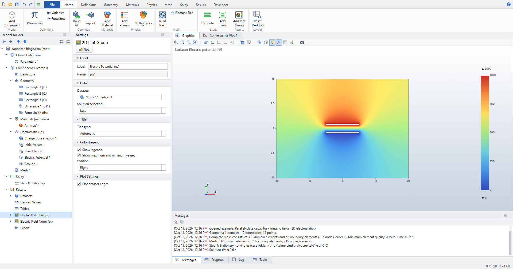
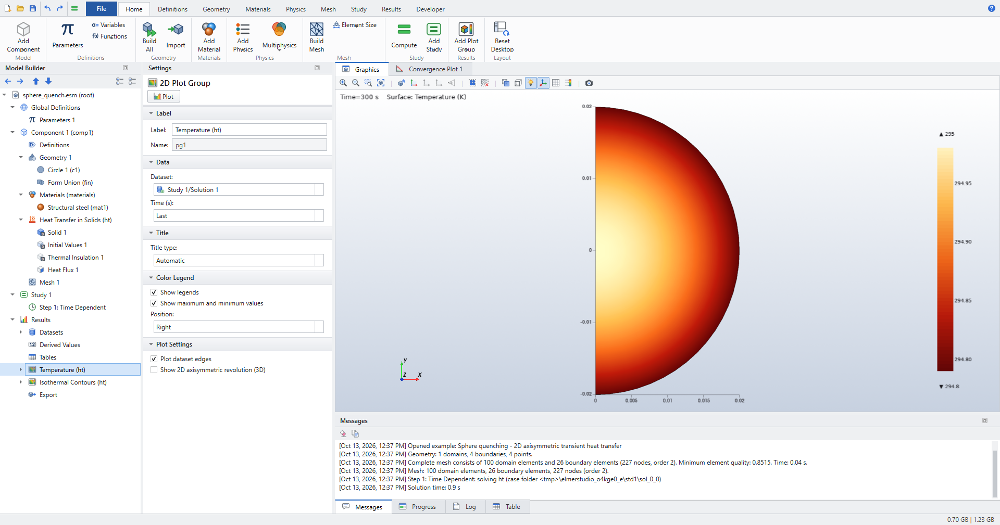
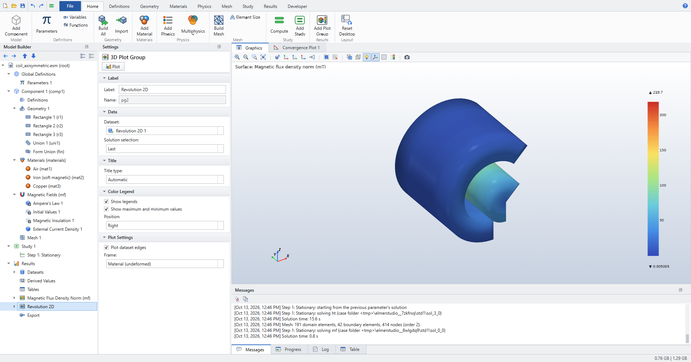
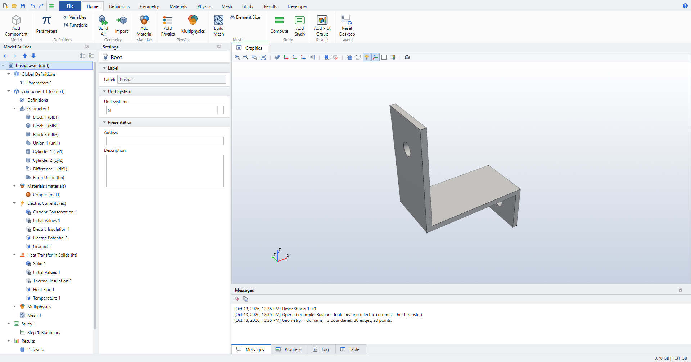
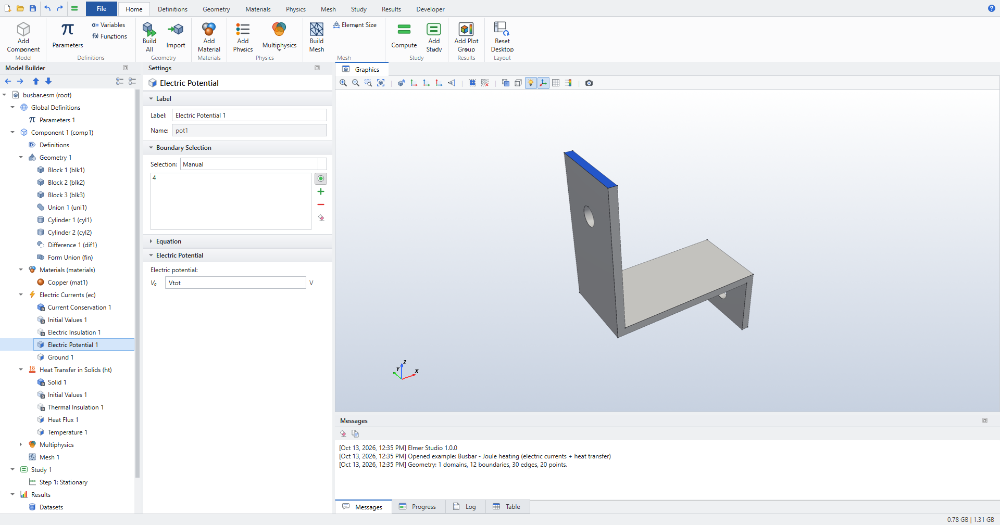
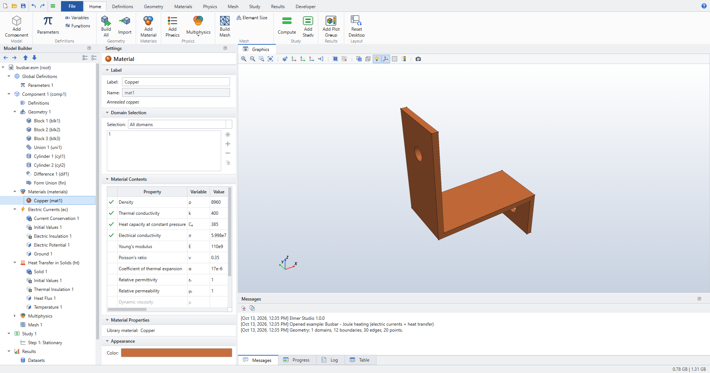
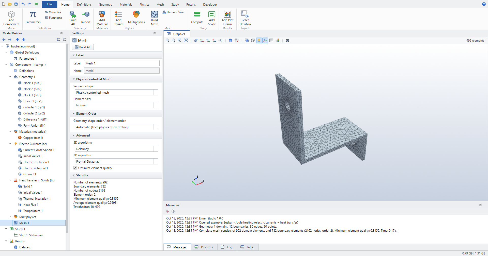
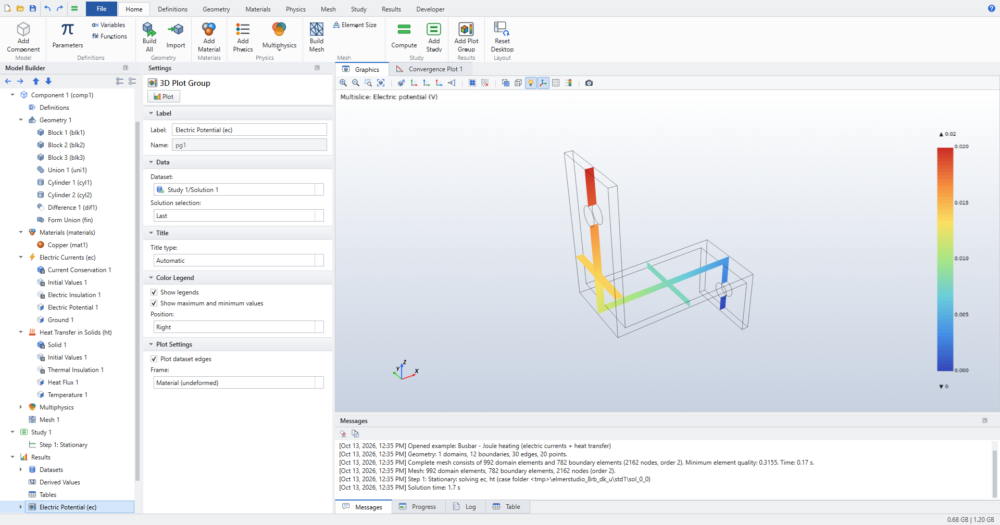

Application Library examples
The Application Libraries are complete models, ready to solve. Open one from the New window, from , or from the command line with elmerstudio --example KEY. Then press Ctrl+= to compute it. Each solves in seconds to a minute.
Use them to see how a model of a given kind is set up: open the nodes one by one and read their Settings.
| Example | Key | Space | Physics and study | What it shows |
|---|---|---|---|---|
Busbar - Joule heating |
|
3D |
Electric Currents + Heat Transfer (Joule Heating), stationary |
Blocks, union and cylindrical holes; voltage and ground on the leg ends; convective cooling; the Electromagnetic Heating coupling. |
Heat sink |
|
3D |
Heat Transfer in Solids, stationary |
A fin Array; a heat flux |
Cantilever beam - eigenfrequencies |
|
3D |
Solid Mechanics, eigenfrequency |
A steel beam fixed at one end; six eigenmodes. The first frequency agrees with Euler–Bernoulli theory (40.80 vs 40.77 Hz). |
Flow past a cylinder |
|
2D |
Laminar Flow, stationary |
A channel with a cylinder at Re = 20: inlet velocity, outlet, default walls; a finer mesh. |
Parallel-plate capacitor |
|
2D |
Electrostatics, stationary |
Two plates in an air box (Difference); potential and ground on the plates; fringing fields. |
Coil with iron core |
|
2D axisymmetric |
Magnetic Fields, stationary |
Coil and iron core in air; External Current Density; magnetic flux density in r-z. |
Sphere quenching |
|
2D axisymmetric |
Heat Transfer in Solids, time dependent |
A half-disc sector revolved into a steel sphere at 600 °C, cooled by convection for 300 s. |
Loudspeaker radiation |
|
3D |
Pressure Acoustics, frequency domain |
A piston on a closed box in a sphere of air; Spherical Wave Radiation; Exterior Field Calculation; radiation patterns. |
Spherical scatterer |
|
2D axisymmetric |
Pressure Acoustics, frequency domain |
A rigid sphere in an incident plane wave; the scattered field against the analytic series. |
Gallery








A walk through one example
The busbar, stage by stage, as the Graphics window shows it when you select each node:





The Busbar tutorial builds the full COMSOL tutorial geometry, with work planes and fillets, step by step.